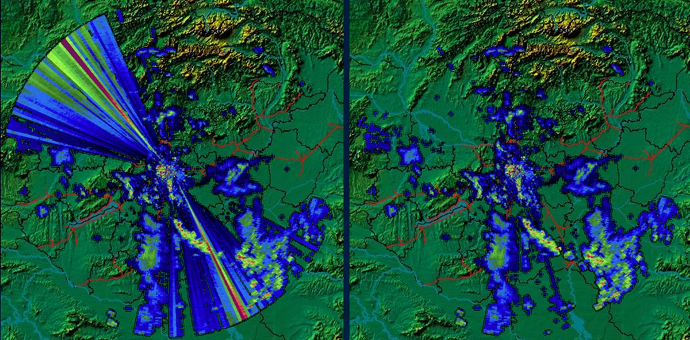

Kömlö
- December 19., csütörtök: Részben felhős égbolt, csapadék nem valószínű. A hőmérséklet 9°C körül alakul
- December 20., péntek: Borult ég, zivatarokra lehet számítani. A hőmérséklet 8°C körül várható.
- December 21., szombat: Részben felhős égbolt, éjszakai fagy várható. A hőmérséklet nappal 6°C, éjszaka 0°C körül alakul.
- December 22., vasárnap: Borult idő hózáporokkal, hótakaró kialakulhat. Fagyos idő várható, a hőmérséklet nappal 4°C, éjszaka 0°C körül lesz.
- December 23., hétfő: Felhős égbolt, fagyos idő. A hőmérséklet nappal 2°C, éjszaka -2°C körül alakul.
- December 24., kedd: Havas eső vagy hózápor váltakozik tiszta időszakokkal. Fagyos és szeles idő várható, a hőmérséklet nappal 4°C, éjszaka 0°C körül lesz.
- December 25., szerda: Részben felhős égbolt, csapadék nem valószínű. A hőmérséklet nappal 5°C, éjszaka -1°C körül alakul.
